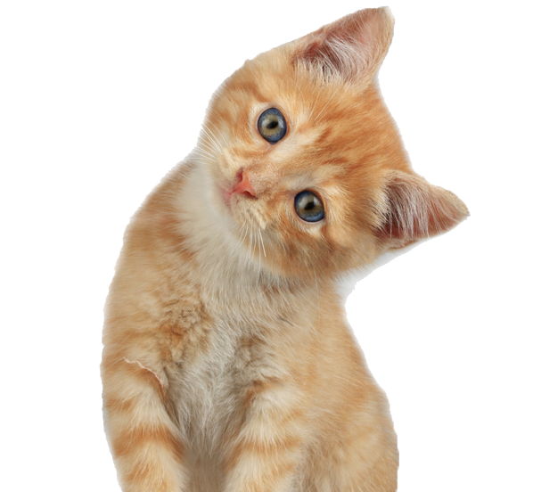

Creemos que con la cooperación de todas las personas, podremos crear un mundo mejor para los animales. Les acercamos algunas de las experiencias de mascotas que se pudieron reencontrar con sus amig@s humanos, con el objetivo de concientizar y alentar a que te sumes a esta iniciativa.

Cielo
Fecha de desaparición: 03/01/2019.
Comentario: Es una perrita muy temerosa, es por esto que cuando la sacaron a pasear y escucho que pasaba el tren, empezó a correr desesperadamente y su dueño no la vió mas.
Edad: 6 años.
Reencuentro: 05/01/2019.